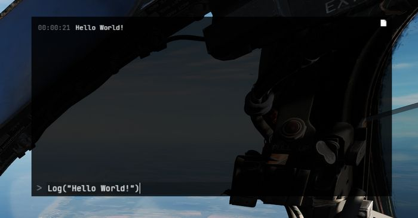
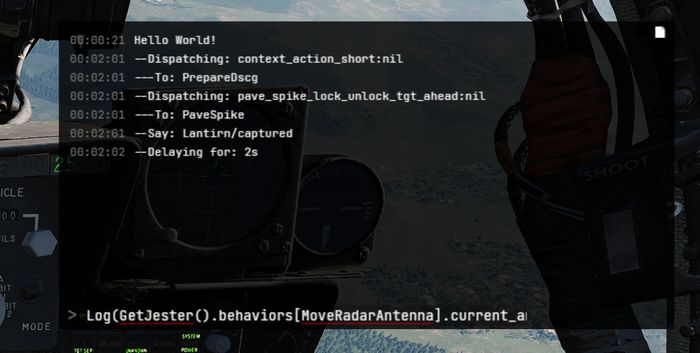
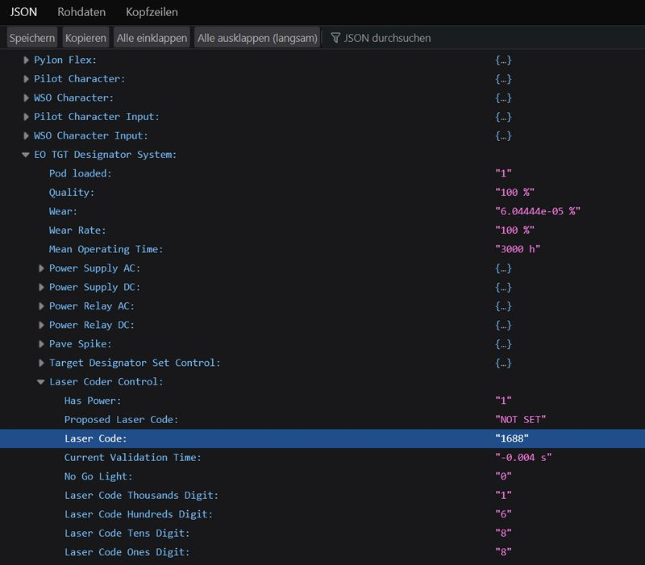

Lua API
This gives a quick overview of Lua, which Jester is primarily coded in; and explains the Jester API itself, as well as how to create custom mods.
Get started with Lua
Useful links:
- Lua Doc: https://www.lua.org/docs.html
Tables
Lua in itself is a fairly simple language with not too many features. It primarily revolves around the use of tables. Tables can be compared to arrays, lists and dictionaries, or maps.
-- dictionary
local person = {
name = "John",
age = 20,
}
-- array/list
local fruits = { "Orange", "Apple", "Lemon" }
Arrays also implicitly decay to dictionaries with ascending keys 1, 2, etc.
Access can be either in a lookup-style person["age"] = 21, or like fields
person.age = 21.
In Lua, indices start counting at 1:
print(fruits[1]) -- Orange
The length of a table can be accessed using #:
-- appending to a table
fruits[#fruits + 1] = "Cherry"
Anything not explicitly set is given the value nil.
Syntax example
function ageCheck(name, age)
if age < 18 then
print("Sorry", name)
else
print("Okay", name)
end
end
Classes
Lua itself does not provide classes. However, we created a framework to add class-like structures to Lua:
local Class = require('base.Class')
local Person = Class()
Person.name = nil -- fields
Person.age = nil
function Person:Constructor(name, age)
self.name = name
self.age = age
end
Person:Seal() -- Prevent adding/removing more values/functions to it
The framework also supports inheritance:
local Class = require('base.Class')
local Behavior = require('base.Behavior')
local AssistAAR = Class(Behavior) -- inherits from Behavior
Debugging
Unfortunately, we do not have any Lua debugger setup. One has to rely on caveman debugging with prints.
To aid in that, Jester offers an in-game console UI (RCTRL+L).
This console displays any string logged via Log(...).
Further, it offers a console prompt allowing execution of Lua code.

The prompt can also be used to inspect the running code, for example by entering a command such as
Log(GetJester().behaviors[require('radar.MoveRadarAntenna')].current_antenna_degrees.value)

🚧 HB UI does not support the full keyboard yet, for example
().[]:"'cannot be entered. It is thus recommended to prepare the prompt in an external text editor and simply copy-paste it into the UI instead.
We also provide a Lua playground in WizardJester.lua, which is always executed
directly on startup.
It is also possible to edit Lua files while DCS runs, without restarting the game. Simply edit a LUA file and then reload the DCS mission with CTRL+R and the new Lua file will be effective.
User Mods
Add content
Custom Jester logic is placed in the Saved Games folder, within the jester\mods subfolder.
The full path might for example look like:
C:\Users\John Doe\Saved Games\DCS_F4E\jester\mods
Any Lua file placed in this folder will be made available and can be loaded
through for example require 'MyFile' within Lua.
Any Lua file placed in the subfolder jester\mods\init will not only be made available,
but also be executed when spawning into the aircraft. This mechanism allows
announcing your custom content and adding it to Jester through a callback register called mod_init:
-- Place this in a LUA file in jester\mods\init
mod_init[#mod_init+1] = function(jester)
-- Executed at spawn, use 'jester' to register your logic
Log("Hello World!")
end
💡 When the
jester\modsfolder does not exist, it will be automatically created on first spawn of the aircraft. Further, the folder will be pre-populated with a simpleExampleMod.
Replace content
Existing behavior of Jester can be replaced by simply adding a Lua file under
the same name than the original file you want to replace to the jester\mods folder.
For example, in order to replace MoveRadarAntenna.lua
(e.g. G:\DCS World OpenBeta\Mods\aircraft\F-4E\Jester\radar\MoveRadarAntenna.lua) with custom logic,
place a file that is called MoveRadarAntenna.lua as well into the modding folder
(e.g. C:\Users\John Doe\Saved Games\DCS_F4E\jester\mods\radar\MoveRadarAntenna.lua).
Now, when the existing logic tries to load this file using require 'radar.MoveRadarAntenna',
your custom file will be prioritized and loaded instead. To get back the original behavior,
simply delete your custom file.
🟡 CAUTION: It is not possible to replace any files from the following folders:
- base
- memory
- senses
- stats
Attempting to do so results in a warning message being shown and all Jester mods getting disabled.
Jester Modding Repository
To share mods with others or propose integration of mods into the base game, content can be uploaded to the public repository Heatblur-Simulations/jester-modding.
This repository also contains the source files of Jester to aid modders in learning the Api, but also to enable modification of existing logic.
Jester API
Jesters logic is divided into 6 layers of abstraction:
- Intention (WIP)
- Plan (WIP)
- Situation
- Behavior
- Task
- Action
The original logic is located in the DCS Mod-Folder, for example:
G:\DCS World OpenBeta\Mods\aircraft\F-4E\Jester
Example
As an example that touches most of the layers, we want to create a feature that lets Jester report the current speed every couple of seconds during flight.
Therefore, we start with a Situation. A situation needs an activation and deactivation Condition:
-- Airborne.lua
local Class = require 'base.Class'
local Condition = require 'base.Condition'
local Airborne = {}
Airborne.True = Class(Condition)
Airborne.False = Class(Condition)
function IsAirborne()
-- details on observations later
return GetJester().awareness:GetObservation("airborne") or false
end
function Airborne.True:Check()
return IsAirborne() -- activation condition
end
function Airborne.False:Check()
return not IsAirborne() -- deactivation condition
end
Airborne.True:Seal()
Airborne.False:Seal()
return Airborne
Activation and deactivation conditions do not necessarily have to be the same.
Now, we can use this condition in our Flight situation and add our desired
behavior:
-- Flight.lua
local Class = require 'base.Class'
local Situation = require 'base.Situation'
local Airborne = require 'conditions.Airborne'
local ReportSpeed = require 'behaviors.ReportSpeed'
-- behavior will be defined in the next step
local Flight = Class(Situation)
-- it simply expects a class with a :Check() method
Flight:AddActivationConditions(Airborne.True:new())
Flight:AddDeactivationConditions(Airborne.False:new())
function Flight:OnActivation()
self:AddBehavior(ReportSpeed) -- start our behavior
end
function Flight:OnDeactivation()
self:RemoveBehavior(ReportSpeed) -- stop our behavior
end
Flight:Seal()
return Flight
The situation also has to be registered in F-4E_WSO.lua (WIP):
-- in F-4E_WSO.lua
...
function CreateF4E_WSOJester()
...
wso::AddSituations(Flight:new())
...
end
Now, we can define our behavior:
-- ReportSpeed.lua
local Class = require('base.Class')
local Behavior = require('base.Behavior')
local SaySpeed = require('tasks.common.SaySpeed')
-- Task will be defined in the next step
local ReportSpeed = Class(Behavior)
function ReportSpeed:Constructor()
Behavior.Constructor(self)
end
function ReportSpeed:Tick()
-- this is called periodically
local task = SaySpeed:new(...) -- access to speed explained later
GetJester():AddTask(task)
end
ReportSpeed:Seal()
return ReportSpeed
Now, this would let Jester say something on every tick, a bit too verbose. To
improve on this, the Urge-system has been created. We can wrap our task in an
Urge and it will only be called on a set interval (which is automatically
applied some variance based on Jesters fixation and stress level):
-- ReportSpeed.lua
local Class = require('base.Class')
local Behavior = require('base.Behavior')
local Urge = require('base.Urge') -- added
local StressReaction = require('base.StressReaction') -- added
local SaySpeed = require('tasks.common.SaySpeed')
local ReportSpeed = Class(Behavior)
function ReportSpeed:Constructor()
Behavior.Constructor(self)
-- logic of the behavior
local say_speed = function ()
-- very simple in this case,
-- but could also trigger multiple tasks based on conditions, if desired
local task = SaySpeed:new(...)
GetJester():AddTask(task)
return {task}
end
-- define the urge
self.urge = Urge:new({
time_to_release = s(10), -- baseline interval (10s now)
on_release_function = say_speed, -- what to execute
stress_reaction = StressReaction.ignorance, -- how important is this to Jester
})
self.urge:Restart() -- start it
end
function ReportSpeed:Tick()
-- we could also modify the urge now, if desired
-- for example increasing the stress level
self.urge:Tick() -- tick it
end
ReportSpeed:Seal()
return ReportSpeed
The next step is to create the actual Task that will take care of reporting the given speed:
-- SaySpeed.lua
local Class = require('base.Class')
local Task = require('base.Task')
local SayAction = require('actions.SayAction')
local SaySpeed = Class(Task)
function SaySpeed:Constructor(speed)
Task.Constructor(self)
local on_activation = function()
if speed < kt(500) then
-- see PhrasesList.txt for all supported voice lines
self:AddAction(SayAction('awareness/wereslow'))
else
self:AddAction(SayAction('awareness/werefast'))
end
end
self:AddOnActivationCallback(on_activation)
end
SaySpeed:Seal()
return SaySpeed
The last part is the final Action, in our case SayAction. Actions are
usually very generic and basic. In most cases, the existing SayAction will be
all thats needed. Refer to SayAction.lua for how it works.
If a behavior has no extra need for a specific task and just wants to say a
phrase, one can also directly use SayTask:
-- in a Behaviors logic
...
local task = SayTask:new('misc/outoffuel')
GetJester():AddTask(task)
...
LReal and units
A very common need is to work with real values and units, such as speed or time.
Therefore, we have LReals, with units defined in LUnit.
local time = min(15)
local speed = kt(500)
local fuel = lb(12000)
if time > s(10) then
print("foo")
end
time = time - s(40)
Careful when doing scalar operations:
-- correct
time *= 2
-- incorrect
time *= s(2)
Latter would result in an invalid LReal, which can be checked for using
time:IsValid().
If necessary, values can be converted to another unit:
local timeInSeconds = time:ConvertTo(s)
print("Time:", timeInSeconds)
time.value would access the raw underlying number.
Accessing properties
Lua has full access to all Propertys defined in our components and can access
them easily with GetProperty:
function GetTotalFuelQuantity()
local gauge_readout = GetProperty(
"/Pilot Fuel Quantity Indicator/Fuel Meter", -- path
"Internal Fuel Quantity Indication" -- property name
).value
return gauge_readout or lb(10000)
end
GetProperty expects the full path to the component within the component-tree
(that are all names of parent components), they must start with / to
indicate an absolute path.
The returned value is a wrapper Property object. Access to the underlying
value (in this case a LReal with unit Pounds) is given by
GetProperty(...).value.
See the properties_snapshot.json file in the
Heatblur-Simulations/jester-modding
repository for a full list of all readable properties.

💡 Open the file with a browser to skim and search through it.
Observations and Senses
Additionally to direct property access, Jester has an Observation-System. The system allows to make frequently used data accessible in an easy way, or also to provide more complex data, i.e. coming from the DCS SDK.
Observations are part of Senses, of which Jester has several (eyes, ears, …).
As of now, most of them are WIP.
local isAirborne = GetJester().awareness:GetObservation("airborne") or false
Interactions
One key aspect of Jester is that he can interact with the cockpit by clicking switches, buttons and turning knobs.
Therefore, the API offers two approaches.
Component Interactions
The preferred way to interact with the cockpit is via the component system.
To allow interaction, a manipulator has to be registered at F_4E_WSO_Cockpit.lua:
-- ChaffMode: OFF, SGL, MULT, PROG
self:AddManipulator(
"Chaff Mode",
{component_path = "/WSO Cockpit/WSO Left Console/AN_ALE-40 CCU/Chaff Mode Knob"}
)
After that, it can easily be interacted with, for example:
task:AddAction(SwitchAction:new("Chaff Mode", "MULT"))
-- or in short
task:Click("Chaff Mode", "MULT")
or reading its current value:
local cockpit = GetJester():GetCockpit()
local chaff_mode = cockpit:GetManipulator("Chaff Mode"):GetState()
Raw Interactions
If the desired switch does not support the component interface yet, one can instead fall back on a raw interface that invokes DCS commands directly, as if the player would have triggered a bind manually.
-- sends value 1 via command WSO_EJECT_INSTANT to device EJECTION_SEAT_SYSTEM
ClickRaw(devices.EJECTION_SEAT_SYSTEM, device_commands.WSO_EJECT_INSTANT, 1)
-- sends the value corresponding to position 2 on a 7-position knob
ClickRawKnob(devices.HUD_AN_ASG_26, device_commands.HUD_SelectHUDMode, 2, 7)
See devices.lua for all available devices and likewise command_defs.lua for
the commands.
In general, Knobs and 2-pos switches use the range [0, 1] for values, while
3-pos switches often (but not always) use [-1, +1]. For 3-pos switches -1 is
usually used to move a 3-pos switch down, +1 to move it up - but some switches
have a different orientation. See default.lua and clickabledata.lua to learn
more about a specific switch and how it reacts to values.
Events
Next to clicking switches, Jester can react to events send either from C++ or also from within Lua. The system follows a simple observer/listener pattern:
ListenTo("go_silent", "Radar", function(task)
task:Click("Radar Power", "STBY")
end)
with:
if is_aar then
DispatchEvent("go_silent")
end
Task API
A core aspect of writing logic for Jester revolves around using the Task class.
Tasks consist of a sequence of Actions. A task can be paused, resumed or cancelled entirely by
the system if necessary.
Actions are, by design, executed asynchronously. Executing a click will take some time and not execute instantly. In particular, adding a click action to a task will not block the code, it simply gets added to the chain of actions to execute eventually.
This concept is similar to Future-APIs in other languages and Task offers a fluent-API to deal
with it conveniently.
Consider the following example:
local task = Task:new()
task:Roger()
:Click("Radar Power", "OPER")
:Wait(min(4))
:Click("Screen Mode", "radar")
:Say("phrases/radar_ready")
:Then(function()
self.scan_for_bandits = true
end)
Among other functions, the API offers:
AddAction- anyAction, basis for the APIThen- anonymous functionWait- timeWaitUntil- predicateSay- phraseRogerCantDoClick- name, stateClickFast- name, stateClickShort- name, stateClickShortFast- name, state
Refer to Task.lua for details.
UI
Jester provides two types of user interfaces. A wheel with selectable options and a dialog with questions and selectable answers that are shown on demand. See Wheel UI and Dialog UI for more.